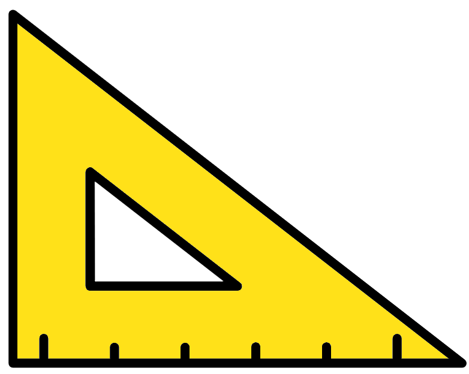
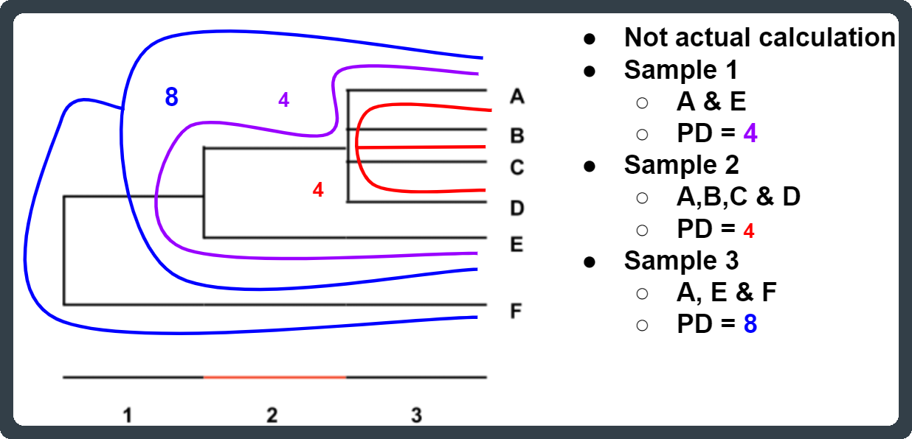

A Resources

A.1 Suggested readings
The QIIME2 tutorials page contains many useful protocols and possible usage for these scripts (https://docs.qiime2.org/2021.2/tutorials/).
The QIIME scripts collection (http://qiime.org/scripts/index.html) includes many other useful scripts that we have not described, each script with its own description and tips for using it. We encourage you to explore this resource.
A large resource containing links to literature on how easy it is to introduce bias into microbiome studies:
http://www.opiniomics.org/the-unbearable-madness-of-microbiome/
Diversity of 16S rRNA Genes within Individual Prokaryotic Genomes Anna Y. Pei, William E. Oberdorf, Carlos W. Nossa, Ankush Agarwal, Pooja Chokshi, Erika A. Gerz, Zhida Jin, Peng Lee, Liying Yang, Michael Poles, Stuart M. Brown, Steven Sotero, Todd DeSantis, Eoin Brodie, Karen Nelson, and Zhiheng Pei (2010) APPLIED AND ENVIRONMENTAL MICROBIOLOGY.
http://www.ncbi.nlm.nih.gov/pmc/articles/PMC2893482/
Analysis, Optimization and Verification of Illumina- Generated 16S rRNA Gene Amplicon Surveys Michael C. Nelson, Hilary G. Morrison, Jacquelynn Benjamino, Sharon L. Grim, Joerg Graf. (2014) PlosONE
http://journals.plos.org/plosone/article?id=10.1371/journal.pone.0094249
Interpreting 16S metagenomic data without clustering to achieve sub-OTU resolution Mikhail Tikhonov, Robert W Leach and Ned S Wingreen (2015) ISME http://www.nature.com/ismej/journal/v9/n1/full/ismej2014117a.html
De novo clustering methods outperform reference-based methods for assigning 16S rRNA gene sequences to operational taxonomic units Sarah L. Westcott and Patrick D. Schloss (2015) PeerJ
http://www.ncbi.nlm.nih.gov/pmc/articles/PMC4675110/
Waste Not, Want Not: Why Rarefying Microbiome Data Is Inadmissible. Paul J. McMurdie, Susan Holmes (2014) Plos ONE.
http://journals.plos.org/ploscompbiol/article?id=10.1371/journal.pcbi.1003531
Normalization and microbial differential abundance strategies depend upon data characteristics. Sophie Weiss, Zhenjiang Zech Xu, Shyamal Peddada, Amnon Amir, Kyle Bittinger, Antonio Gonzalez, Catherine Lozupone, Jesse R. Zaneveld, Yoshiki Vázquez-Baeza, Amanda Birmingham, Embriette R. Hyde and Rob Knight (2017) Microbiome
https://microbiomejournal.biomedcentral.com/articles/10.1186/s40168-017-0237-y
Application of multivariate statiastical techniques in microbial ecology. Paliy O, Shankar V (2016) Molecular Ecology
http://onlinelibrary.wiley.com/doi/10.1111/mec.13536/abstract
Exact sequence variants should replace operational taxonomic units in marker-gene data analysis. Benjamin J Callahan, Paul J McMurdie & Susan P Holmes (2017).
https://www.nature.com/articles/ismej2017119
Optimizing taxonomic classification of marker gene amplicon sequences Nicholas A Bokulich, Benjamin D Kaehler, Jai Ram Rideout, Matthew Dillon, Evan Bolyen, Rob Knight, Gavin A. Huttley, J. Gregory Caporaso
https://microbiomejournal.biomedcentral.com/articles/10.1186/s40168-018-0470-z
Denoising the Denoisers: An independent evaluation of microbiome 3 sequence error-correction methods. Nearing Jacob, Douglas Gavin, Comeau Andre, Langille Morngan
https://peerj.com/preprints/26566.pdf
Compositional data analysis of the microbiome: fundamentals, tools, and challenges. Tsilimigras, M.C. and Fodor, A.A.
https://www.sciencedirect.com/science/article/pii/S1047279716300722
A.2 Other useful resources
A list of very useful site to look at for questions, suggestion and protocols
QIIME2 forum: https://forum.qiime2.org
SEQanswers: http://seqanswers.com
ResearchGate: https://www.researchgate.net/topics
A.3 References
- Aitchison J., (1982). The statistical analysis of compositional data. Journal of the Royal Statistical Society. Series B (Methodological), pp.139-177.
- Caporaso, J. G. et al. Global patterns of 16S rRNA diversity at a depth of millions of sequences per sample. Proc Natl Acad Sci USA 108, 4516–4522 (2011)
- Gloor GB, Macklaim JM, Pawlowsky-Glahn V, and Egozcue, JJ. (2017). Microbiome datasets are compositional: and this is not optional. Frontiers in microbiology, 8, p.2224.
- Hugerth, L.W. and Andersson, A.F., 2017. Analysing microbial community composition through amplicon sequencing: from sampling to hypothesis testing. Frontiers in microbiology, 8, p.1561.
- Pollock J, Glendinning L, Wisedchanwet T, and Watson M. The madness of microbiome: Attempting to find consensus “best practice” for 16S microbiome studies. (2018) Appl Env Microbiology
- Rivers, A.R., Weber, K.C., Gardner, T.G., Liu, S. and Armstrong, S.D., 2018. ITSxpress: Software to rapidly trim internally transcribed spacer sequences with quality scores for marker gene analysis. F1000Research, 7.
- Shannon, C.E., 1948. A mathematical theory of communication. Bell system technical journal, 27(3), pp.379-423.
- Weiss S, Zech Xu ZZ, Peddada S, Amir A, Bittinger K, Gonzalez A, Lozupone C, Zaneveld JR, Vázquez-Baeza Y, Birmingham A, Hydev ER, and Knight R. Normalization and microbial differential abundance strategies depend upon data characteristics. (2017) Microbiome. 3;5(1):27
- Werner JJ, Koren O, Hugenholtz P, DeSantis TZ, Walters WA, Caporaso JG, Angenent LT, Knight R, Ley RE. Impact of training sets on classification of high-throughput bacterial 16s rRNA gene surveys. (2012) ISME J. 6(1):94-103.
- Yarza, P., Yilmaz, P., Pruesse, E., Glöckner, F.O., Ludwig, W., Schleifer, K.H., Whitman, W.B., Euzéby, J., Amann, R. and Rosselló-Móra, R., 2014. Uniting the classification of cultured and uncultured bacteria and archaea using 16S rRNA gene sequences. Nature Reviews Microbiology, 12(9), p.635.
Cutadapt
Martin M. Cutadapt removes adapter sequences from high-throughput sequencing reads. EMBnet.journal, 17(1):10-12, May 2011.
QIIME2 (Quantative Insights Into Microbial Ecology)
Bolyen E, Rideout JR, Dillon MR, Bokulich NA, Abnet C, Al-Ghalith GA, Alexander H, Alm EJ, Arumugam M, Asnicar F, Bai Y, Bisanz JE, Bittinger K, Brejnrod A, Brislawn CJ, Titus Brown C, Callahan BJ,Caraballo-Rodríguez AM, Chase J, Cope E, Da Silva R, Dorrestein PC, Douglas GM, Durall DM, Duvallet C, Edwardson CF, Ernst M, Estaki M, Fouquier J, Gauglitz JM, Gibson DL, Gonzalez A, Gorlick K, Guo J, Hillmann B, Holmes S, Holste H, Huttenhower C, Huttley G, Janssen S, Jarmusch AK, Jiang L, Kaehler B, Kang K, Keefe CR, Keim P, Kelley ST, Knights D, Koester I, Kosciolek T, Kreps J, Langille MGI, Lee J, Ley R, Liu Y, Loftfield E, Lozupone C, Maher M, Marotz C, Martin BD, McDonald D, McIver LJ, Melnik AV, Metcalf JL, Morgan SC, Morton J, Naimey AT, Navas-Molina JA, Nothias LF, Orchanian SB, Pearson T, Peoples SL, Petras D, Preuss ML, Pruesse E, Rasmussen LB, Rivers A, Robeson MS, Rosenthal P, Segata N, Shaffer M, Shiffer A, Sinha R, Song SJ, Spear JR, Swafford AD, Thompson LR, Torres PJ, Trinh P, Tripathi A, Turnbaugh PJ, Ul-Hasan S, van der Hooft JJJ, Vargas F, Vázquez-Baeza Y, Vogtmann E, von Hippel M, Walters W, Wan Y, Wang M, Warren J, Weber KC, Williamson CHD, Willis AD, Xu ZZ, Zaneveld JR, Zhang Y, Knight R, Caporaso JG (2018) QIIME 2: Reproducible, interactive, scalable, and extensible microbiome data science. PeerJ pre-prints
https://www.nature.com/articles/s41587-019-0209-9
BLAST
Altschul S.F., Gish W., Miller W., Myers E.W. and Lipman D.J. (1990). Basic local alignment search tool. J. Mol. Biol. 215: 403-410.
http://blast.ncbi.nlm.nih.gov/Blast.cgi
Bray-Curtis
Bray, J. R. and J. T. Curtis. (1957). An ordination of upland forest communities of southern Wisconsin. Ecological Monographs 27:325-349
Chao1
Chao, A. 1984. Non-parametric estimation of the number of classes in a population. Scandinavian Journal ofStatistics, 11:265-270. Colwell, R.K. and Coddington, J.A. 1994. Estimating terrestrial biodiversity through extrapolation. Philosophical Transactions of the Royal Society B: Biological Sciences, 345:101-118.
DADA2
Callahan BJ, McMurdie PJ, Rosen MJ, Han AW, Johnson AJA. DADA2: High-resolution sample inference from Illumina amplicon data. Nat Methods. 2016. 13, 581-583.
GNEISS
Morton JT, Sanders J, Quinn RA, McDonald D, Gonzalez A, Vázquez-Baeza Y, Navas-Molina JA, Song SJ, Metcalf JL, Hyde ER, Lladser M, Dorrestein PC, Knight R. (2017). Balance Trees Reveal Microbial Niche Differentiation mSystem 17;2(1)
Greengenes
DeSantis, T. Z., P. Hugenholtz, N. Larsen, M. Rojas, E. L. Brodie, K. Keller, T. Huber, D. Dalevi, P. Hu, and G. L. Andersen. (2006). Greengenes, a Chimera-Checked 16S rRNA Gene Database and Workbench Compatible with ARB. Appl Environ Microbiol 72:5069-72.
Faith’s Phylogenetic Diversity (PD)
Faith. 1992. Conservation evaluation and phylogenetic diversity. Biological Conservation 61: 1-10
Faith DP and Baker AM. Phylogenetic diversity (PD) and biodiversity conservation: some bioinformatics challenges (2006) Evol. Bioinform. 2: 121–128.
UniFrac
Lozupone, C.; Knight, R. (2005). "UniFrac: A New Phylogenetic Method for Comparing Microbial Communities". Applied and Environmental Microbiology 71 (12): 8228–8235
https://aem.asm.org/content/71/12/8228.short
UniFrac
Lozupone, Hamady, Kelley & Knight. (2007). "Quantitative and qualitative (beta) diversity measures lead to different insights into factors that structure microbial communities." Appl Environ Microbiol 73 (5): 1576-85
ANCOM
Mandal S, Van Treuren W, White RA., Eggesbø M., Knight R., and Peddada, S.D. (2015). Analysis of composition of microbiomes: a novel method for studying microbial composition. Microbial ecology in health and disease, 26(1), p.27663.
B Mamba installs
B.1 Mamba installation and environment
Mamba is a reimplementation of conda. It is a great tool for installing bioinformatic packages including R packages.
Mamba github: https://github.com/mamba-org/mamba
The best way to use Mamba is to install Miniforge. It has both Conda and Mamba commands.
Miniforge installation: https://github.com/conda-forge/miniforge
Mamba guide: https://mamba.readthedocs.io/en/latest/user_guide/mamba.html
To create the mamba environment qiime2-2023.5 run the below commands in your bash. You will need to have installed mamba first.
#QIIME2
wget https://data.qiime2.org/distro/core/qiime2-2023.5-py38-linux-conda.yml
mamba env create -n qiime2-2023.5 --file qiime2-2023.5-py38-linux-conda.yml
pip install q2-greengenes2Note: You may want to install the most recent version of QIIME2. PLease see the following page for installation instructions: https://docs.qiime2.org/2023.5/install/native/
C Diversity metrics

C.1 Alpha diversity metrics

Alpha diversity measures assess the diversity of each sample separately. Generally a higher value of these indexes/measures indicates higher diversity/evenness.
C.1.1 Observed features
The observed number of features is defined as the number of distinct features, such as ASVs, within a sample.
The number of observed features can also be known as the feature richness of a sample. A sample with more present features than another would be said to be richer.
C.1.2 Evenness
How evenly spread the abundances are across all present features.
- A sample with 4 ASVs, each with 25% relative abundance would be perfectly even.
- A sample with 4 ASVs, where one ASV has 97% abundance and the other 3 have 1%, would be highly uneven.
C.1.3 Faith's PD (phylogenetic diversity)
Faith's PD represents the minimum total branch length that covers all taxa within the sample on a phylogenetic tree (Faith, 1992). A smaller PD value indicates a reduced expected taxonomic diversity whilst a large PD value indicates a higher expected diversity.
A sample with 10 ASVs could have a lower Faith's PD than a sample with only 2 ASVs. This could occur if the 10 ASV sample only has ASVs from one genus whilst the 2 ASV samples consists of ASVs from 2 different Families.

C.1.4 Simpson
A measure of diversity based on number of features present and the relative abundance of each feature. If richness and evenness increase the diversity score increases.
Equation: \[ D = 1 - {( \frac {\sum n{(n-1)}} {N{(N-1)}} )} \]
- D = Simpson diversity index
- n = Abundance of feature
- N = Total feature abundance of sample
The values range from 0 (no diversity) to 1 (infinite diversity).
C.1.5 Simpson evenness measure (simpson_e)
This is a measure of evenness based on the Simpson index. It ranges from 0 (lowest eveness) to 1 (complete evenness). It compares the calculated Simpson Index of a sample to its theoretical maximum if the sample was perfectly even but had the same amount of features.
Equation: \[ E_D = \frac{D} {D_m} \]
- ED = Simpson evenness measure
- D = Simpson diversity index
- Dm = Max possible Simpson diveristy index given the number of features
C.1.6 Shannon
A measure of diversity where a higher number means higher diversity. Shannon's index accounts for both abundance and evenness of the feaures present.
Equation:
\[ H = -\sum_{i=1}^{n} p_i lnp_i \]
- H = Shannon diversity index
- p = n/N
- n = Abundance of feature
- N = Total feature abundance of sample
C.2 Beta diversity metrics

Beta diversity compares 2 samples at a time. This is measured in terms of dissimilarity:
- A lower score indicate the 2 samples are more similar.
- A higher score indicates the 2 samples are more dissimilar.
C.2.1 Weighted and unweighted UniFrac distances
The UniFrac metric is a phylogenetic distance measure between two samples. It is defined as “the sum of the unshared branch lengths between two samples divided by the total branch length (shared + unshared) of two samples” (Lozupone and Knight, 2005). This results in calculating the fraction of the branch lengths unique to each sample (ie. the higher this value is, the more dissimilar two samples are). The entire phylogenetic tree created for all the sequences of all the analysed samples is used for this calculation.
- Unweighted UniFrac: Only considers feature presence/absence.
- Weighted UniFrac: Takes into account feature presence/absence & abundance. I.e. the value is weighted by the abundances.
C.2.2 Bray-Curtis
The Bray-Curtis metric is a dissimilarity measure that can quantify the level of difference between two samples. Two identical samples would have a Bray-Curtis measure of 0 (i.e. they have 0 dissimilarity).
There are 2 versions but the one used by QIIME2 looks at the number of features shared by the 2 samples.
Equation:
\[ CBC = 1 – (\frac{2c} {a + b}) \]
- c = # features present in both samples
- a = # features present in sample a
- b = # features present in sample b
C.3 Diversity Resources
For more diveristy measure please see: https://forum.qiime2.org/t/alpha-and-beta-diversity-explanations-and-commands/2282